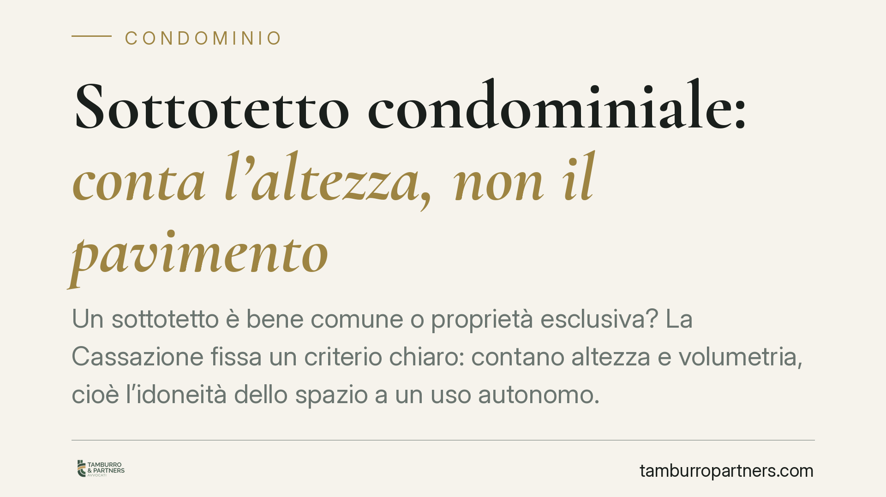
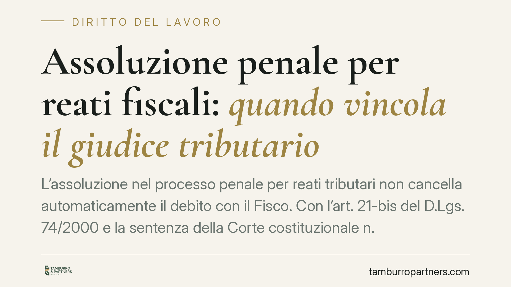
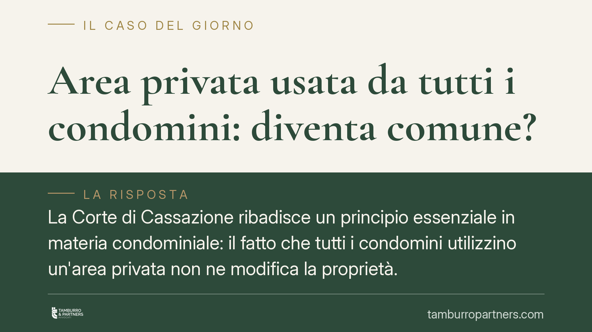
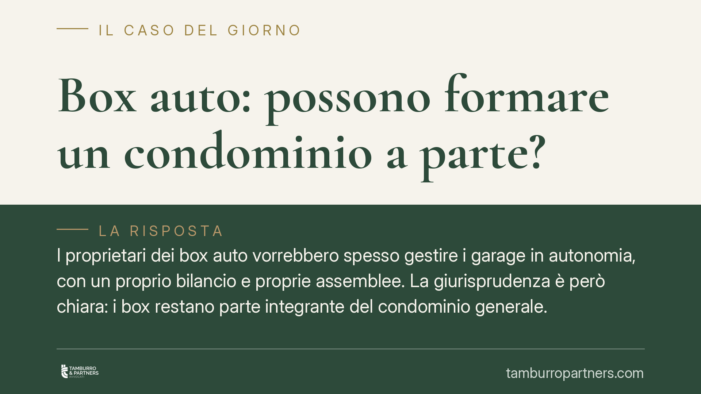

Affitto della casa dopo la separazione: chi paga il canone
Chi resta nella casa in affitto dopo la separazione deve anche pagarne il canone? La Cassazione conferma un principio netto: il coniuge assegnatario dell'abitazione subentra nel co…
Videosorveglianza sul lavoro e licenziamento: i limiti fissati dalla Cassazione
La Corte di Cassazione torna sul rapporto tra videosorveglianza e potere disciplinare: se le immagini che documentano l'illecito del dipendente sono state raccolte in violazione de…

Sottotetto condominiale: conta l'altezza, non il pavimento
Chi possiede davvero il sottotetto? La giurisprudenza di legittimità chiarisce che l'autonomia funzionale di uno spazio si misura sulle sue dimensioni reali, altezza e volumetria, …
Caparra confirmatoria: acconto o risarcimento se la vendita salta?
Nella compravendita immobiliare la caparra confirmatoria svolge una duplice funzione: vale come anticipo se l'affare va a buon fine, ma diventa un risarcimento forfettario se una p…
Lite temeraria in condominio: quando insistere costa caro
Un condòmino continua la causa contro il condominio anche dopo l'annullamento della delibera contestata. Risultato: condanna al risarcimento per lite temeraria. Il Tribunale di Tar…
Foro del consumatore e attività online: quando conta la giurisdizione estera
Avere un sito web raggiungibile dall'estero non basta a rendere un professionista citabile davanti al giudice del Paese del consumatore. Serve una strategia commerciale concreta ve…

Assoluzione penale per reati fiscali: quando vincola il giudice tributario
L'assoluzione nel processo penale per reati tributari non cancella automaticamente il debito con il Fisco. Con l'art. 21-bis del D.Lgs. 74/2000 e la sentenza della Corte costituzio…
Nuovo presidente IID: cosa cambia per la trasparenza degli enti del Terzo Settore
L'Istituto Italiano della Donazione ha un nuovo presidente, Marco Rasconi. L'IID è l'ente che certifica la trasparenza gestionale delle organizzazioni non profit. Il cambio di vert…
Progetti su AI e minori nel Terzo Settore: obblighi per gli ETS finanziati
AiCS e le CTG lanciano DIGIT.NOW.FUTURE, progetto finanziato dal Ministero del Lavoro per educare giovani e adulti all'uso consapevole dell'intelligenza artificiale in trenta terri…

Uso comune di un'area privata: la proprietà non cambia
L'uso quotidiano e condiviso di un'area da parte di tutti i condomini non basta a renderla proprietà comune. Lo ribadisce la Cassazione: la natura di un bene dipende dai titoli, no…
Neutralizzazione dei periodi a retribuzione ridotta nel calcolo della pensione
Il meccanismo della neutralizzazione consente, a certe condizioni, di escludere dal calcolo della pensione i periodi con retribuzione più bassa, evitando che penalizzino l'importo …
Stipendio sotto i minimi costituzionali: quando si recuperano gli arretrati
Uno stipendio conforme al contratto collettivo può comunque essere illegittimo se non garantisce una retribuzione proporzionata e sufficiente. Dopo le sentenze della Cassazione del…
Riparazione dei balconi: chi paga tra proprietario e condominio
I balconi generano contenzioso ricorrente in condominio. La giurisprudenza distingue tra struttura, che resta del singolo proprietario, ed elementi decorativi visibili dalla faccia…
Congedo straordinario per disabilità esteso ai conviventi di fatto
Il congedo straordinario retribuito di due anni per assistere un familiare con disabilità grave non è più riservato a coniugi e parenti. Secondo la giurisprudenza costituzionale sp…
Licenziamento e intelligenza artificiale: quando è legittimo
Un'azienda di cyber security ha licenziato un graphic designer sostituendolo con l'intelligenza artificiale. Il Tribunale di Roma ha chiarito i limiti di questa scelta: la sostituz…

Box auto: possono formare un condominio a parte?
I proprietari dei box auto vorrebbero spesso gestire i garage in autonomia, con un proprio bilancio e proprie assemblee. La giurisprudenza è però chiara: i box restano parte integr…
GPS sull'auto aziendale: quando il controllo è legittimo
Il localizzatore satellitare sul veicolo aziendale non è un occhio libero di seguire il lavoratore. La Cassazione ribadisce la linea di confine: il controllo continuativo è vietato…

Il verbale dell'assemblea condominiale: contenuto e validità
Un verbale incompleto può rendere annullabile la delibera. La legge impone che il documento indichi con precisione partecipanti, quote millesimali e voti espressi. La giurisprudenz…

Parti comuni in condominio: quando cortili, piscine e lastrici lo diventano davvero
Un recente studio del Consiglio Nazionale del Notariato torna sul tema delle parti comuni condominiali, chiarendo quando cortili, piscine e lastrici solari appartengono a tutti i c…

Mancato pagamento dell'affitto: cosa rischia l'inquilino
Saltare una mensilità di affitto non comporta la perdita automatica della casa. La legge sulle locazioni fissa soglie precise e concede all'inquilino un ultimo rimedio: il termine …

Verbale d'assemblea senza i nomi dei votanti: la delibera è valida?
Il verbale dell'assemblea condominiale non è una semplice formalità: deve dare conto di chi ha votato a favore, contro o si è astenuto. Quando manca l'indicazione nominativa dei vo…

Infiltrazioni in condominio: perché la causa del danno va definita subito
Chi agisce per danni da infiltrazioni deve indicare con precisione l'origine del guasto già nell'atto introduttivo. Una recente pronuncia della Cassazione ribadisce che modificare …

Fondo morosi in condominio: i condomini in regola devono coprire i debiti degli inadempienti?
Un'assemblea può obbligare i condomini in regola a versare un fondo per coprire i debiti dei morosi? Una pronuncia della Corte d'Appello di Genova risponde di no, salvo presupposti…

Piccole irregolarità edilizie in casa: come comportarsi
Molti immobili presentano piccole difformità edilizie: una finestra spostata, un tramezzo non censito, una veranda mai dichiarata. La legge distingue nettamente tra l'assenza dei r…

Clausole vessatorie online: il flag non basta, serve la firma con valore di scrittura
Un semplice click su una casella non equivale a firma. La giurisprudenza distingue tra la validità del contratto concluso online, ammessa, e l'efficacia delle clausole vessatorie, …

TFR e Fondo di Tesoreria INPS: la soglia dei 50 dipendenti
Circolano indicazioni su presunte nuove soglie per il versamento del TFR all'INPS a partire dal 2026. In assenza di un testo normativo ufficiale che confermi tali novità, ricostrui…

Rendiconto condominiale: quando è nullo o annullabile
Il rendiconto condominiale può essere impugnato, ma il tipo di vizio cambia tutto. La distinzione tra nullità e annullabilità decide chi può agire, entro quali termini e con quali …

Parcheggio in condominio: quando il divieto richiede l'unanimità
Un'assemblea può vietare il parcheggio delle moto nel cortile comune con la sola maggioranza? La giurisprudenza recente risponde di no. Quando la delibera incide sul godimento indi…

Maternità e specializzazione medica: la Consulta rimuove la penalizzazione in carriera
La Corte Costituzionale è tornata sul tema della maternità nel percorso di formazione medico-specialistica, censurando un meccanismo che penalizzava le specializzande costrette a s…

Divisorio sul balcone e decoro condominiale: la valutazione è caso per caso
Installare un pannello divisorio sul proprio balcone non compromette in modo automatico il decoro architettonico dell'edificio. Una recente pronuncia del Tribunale di Savona ribadi…